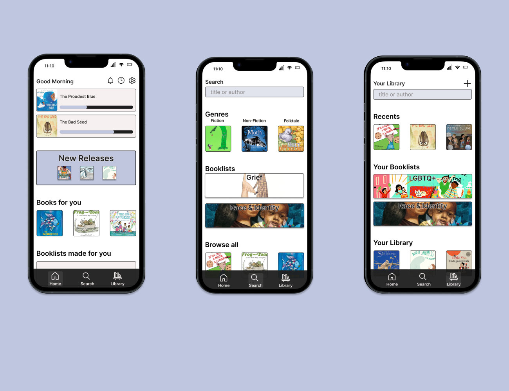

![A picture of an purple aura, an circle with a white center that expands out into purple. There are four arrows, moving clockwise, that form a square around the aura. The left arrow points up and has the word inhale on the outside with numbers 1, 2, 3, and 4 on the inside. The top arrow points right and has the word exhale on the outside with numbers 1,2,3, and 4 on the inside. The right arrow points down with the word inhale on the outside and numbers 1 through 4 on the inside. Finally the bottom arrow points left and has the word exhale on the outside with numbers 1 through 4 on the inside.](../images/Breathing1.png)

![A picture of an blue green aura, a circle with a white center that expands out into dark blue. There are four arrows, moving clockwise, that form a square around the aura. The top arrow points right and has the word inhale on the outside with numbers 1, 2, 3, and 4 on the inside. The right arrow points down and has the word exhale on the outside with numbers 1 to 6 on the inside. The bottom arrow points left with the word inhale on the outside and numbers 1 through 4 on the inside. Finally the left arrow points up and has the word exhale on the outside with numbers 1 through 6 on the inside.](../images/Breathing3.png)
I consider myself to be super passionate about learning and knowledge in general, so on my free time I'm currently working on a free children's books app that I would love to make a reality. The quick backstory to this idea is that growing up low income, books were one of the few things I surprisingly never lacked. Whether I got them for free at the end of the school year or grabbed them out of the "free books" box at my local library, I had the privilege of curating my own personal mini library at home from used books I collected. The main goal with this app is to find a way for children to have free and unlimited access to their own personally curated e-library.
